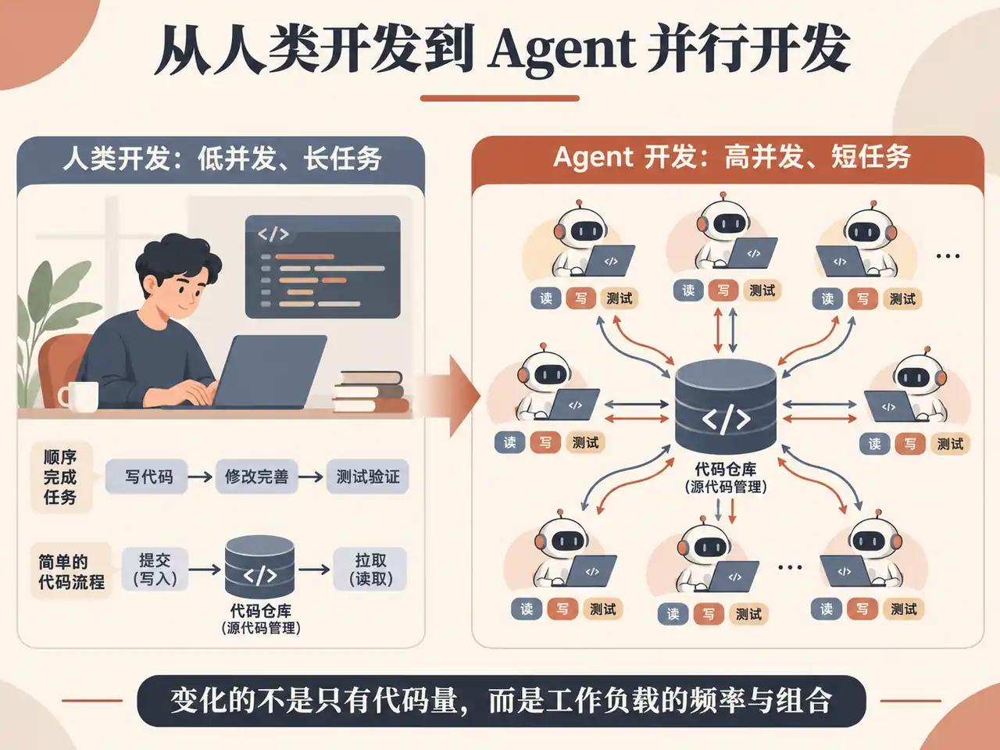
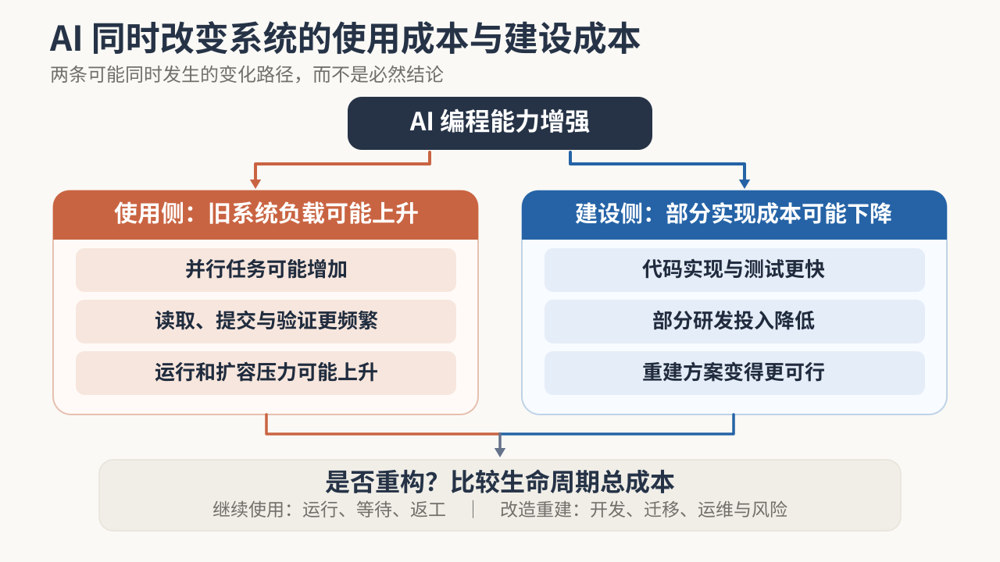

2026 年秋天，几条关于 Git 的工程新闻引起了我的注意。
10 月，Anthropic 宣布已将内部代码仓库迁移到自研系统。11 月 2 日，OpenAI 介绍了保留 Git 使用方式、重新建设后台服务的方案。11 月 5 日，GitHub 也公开了面向大规模 Agent 开发的基础设施升级计划。
三家公司都在解决一个问题：当大量 AI Agent 开始同时写代码，原来的版本管理和协作基础设施能否继续支撑这种规模？
但它们没有选择同一条路线。Anthropic 更换了内部代码管理系统；OpenAI 保留开发者熟悉的 Git 使用方式，重新建设后台服务；GitHub 则希望在用户几乎无须改变习惯的情况下升级平台。
最让我感兴趣的，是 Anthropic 与 OpenAI 的分歧。两家公司都是前沿模型企业，都大量使用编程 Agent，为什么没有得出相同的技术答案？
要解释这个差异，需要先弄清楚 Git 原本为什么这样设计，以及 AI 究竟改变了哪些条件。
一、Git 没有突然过时，变化的是它所处的环境
Git 是团队用来记录代码修改、保存历史并协作合并的工具。它的一个关键设计，是让每位开发者都能在自己的电脑上保留代码和历史，离线时也能继续工作；需要协作时，再把修改同步到团队共享版本。这套设计长期非常合理。
大型代码仓库带来的压力并不是 Agent 首次创造的。Google 在2016 年发表的工程研究中介绍了超大规模代码仓库的管理方式，Meta 后来也公开了面向大型仓库的代码管理工具。这些实践说明，仓库规模、读取效率和团队协作早就是基础设施问题。Git 本身也有办法让客户端只获取需要的代码，而不必每次复制整个仓库。Anthropic 说，自己在重建之前也尝试过按需取数、内部镜像等优化；它们一度缓解了压力，但随着代码变更越来越频繁，维护成本仍然上升。
这里的 Agent，指能接收编程任务后自行读取代码、修改文件并执行测试的 AI。它改变的是这些操作发生的频率与组合：任务往往更短，同时运行的数量更多，而且持续联网。一个 Agent 可能只改几份文件，却会反复读取代码、准备环境、提交修改并触发测试；多个 Agent 同时工作时，这些操作就会叠加。

Anthropic 披露，其内部每天合并的代码变更从 2026 年 5 月的约 2,500 项增长到 9 月的 30,000 多项；自动化测试每天需要取用代码约 2,500 万次。这些都是 Anthropic 的内部数据，不代表普通团队的负载。Anthropic 也明确表示，对绝大多数仓库而言，Git 仍然是合适的设计，近期并不认为多数组织都会遇到同样的问题。
一种技术过去的优势，在使用条件变化后，也可能成为需要重新权衡的成本。
这也提供了一种观察成熟软件的新角度。看到某种旧技术受到 AI 冲击，首先应该问的不是“新工具能否取代它”，而是“它当初为什么这样设计，支撑这个选择的条件现在是否还成立”。
这与我在《AI 正在把“使用软件”和“操作软件”拆开》中讨论的变化相连：当 Agent 接管原本由人完成的操作，变化的不只是交互界面，还包括软件与执行者之间的分工。本篇继续往下一层看，当执行者改变后，支撑代码生产的基础设施是否也需要调整。
二、AI 不仅增加旧系统的压力，也可能降低重建系统的部分成本
如果只把 AI 编程理解为“写代码更快”，我们会漏掉它对技术演进的另一面影响。
过去，企业即使发现某套基础设施越来越不合适，也未必会选择重做。重新建设意味着投入工程师，处理复杂的边界情况，迁移已有工具，还要确保新系统不会破坏正在进行的业务。旧系统虽然不完美，继续维护却可能仍然更划算。
Agent 可能同时推动两种变化。一方面，更便宜的代码生成使企业能够并行安排更多任务，仓库读取、提交、测试和环境准备的成本随之上升；另一方面，同样的工具也能参与新系统的实现和测试，降低部分开发投入。

这两种变化并非必然同时出现，但当旧系统的持续运行成本增加、新系统的部分建设成本下降时，重新计算改造的收益就有了意义。架构设计、数据迁移、长期运维和失败风险，仍须单独核算。
Anthropic 为内部代码管理建设的 Scion，提供了一个具体例子。Anthropic 官方披露，一个七人团队在五个月内完成了新系统建设和内部迁移，也同步补齐了代码审查、搜索和权限等配套工具。Claude 帮助团队更快实现和测试系统，但工程师仍然负责确定架构边界、检查修改意图，并确保 Agent 没有破坏系统约束。
Anthropic 自报，自动化测试和研究任务取用代码的时间从分钟级降到秒级；仅自动化测试环节，就释放了约 25% 的 CPU 处理能力。这些是厂商内部结果，不是独立横评，也不能直接外推到其他团队。它们说明的是：在特定负载下，AI 参与建设新系统后，重构的部分实现成本和运行收益都可能发生变化。
一项技术是否值得替换，不只取决于旧方案的成本上升了多少，也取决于新方案的建设成本下降了多少。
这也能帮助我们重新理解 AI 编程对企业自建软件的影响。过去因为研发成本太高而必须采购的内部工具，现在可能出现更可信的自建选择。但初始开发便宜，不等于后续维护、兼容、数据迁移和责任承担也同样便宜。
我此前在《当 AI 能替你造软件，哪些服务仍值得买？》中讨论过 AI 如何改变软件的买建经济性。本篇把同一问题延伸到基础设施：AI 既可能提高旧系统的持续运行成本，也可能降低重建它的部分成本。
三、同样是模型公司，为什么 Anthropic 和 OpenAI 选择不同路线？
如果只看两家公司都在使用大量编程 Agent，很容易以为它们会得出相同的技术答案。但相似的模型能力，不代表内部工程环境、已有工具和迁移约束也相同。
Anthropic 更愿意为自己的 Agent 工作方式重建内部系统；OpenAI 则希望保留开发者熟悉的 Git 使用方式，只重做后台服务。GitHub 面对的又是大量外部开发者和企业，不能要求大家一起迁移。
真正的分歧在于：为了提高并发能力，企业愿意改变原有系统的哪一部分？
| 比较维度 | Anthropic（Scion） | OpenAI（Pando） | GitHub（Rubicon） |
|---|---|---|---|
| 改造范围 | 重建内部代码管理系统 | 保留 Git 使用方式，重做后台服务 | 保留 Git 使用方式，升级平台底层 |
| 优先保留 | 适配持续在线的 Agent 工作方式 | 现有客户端和开发习惯 | 外部用户工作流与生态兼容 |
| 主要取舍 | 需要迁移配套工具，不再兼容通用 Git 客户端 | 保留 Git 使用方式，但同时查看多个开发版本时，不保证它们都来自同一时刻 | 在平台持续运行的同时分阶段迁移底层 |
| 当前状态 | 已完成内部迁移 | 已投入内部生产 | 有限私有预览 |
依据三家官方工程说明整理。表格比较的是改造选择，不是性能排名；各家的负载和统计口径不同。GitHub Rubicon 截至 2026 年 11 月 11 日仍处于有限私有预览，官方计划在 2027 年初扩大开放范围。
Anthropic 的选择来自一个很具体的判断：它内部大多数访问代码仓库的工具，都是持续联网的 Agent 和自动化任务。既然这些任务很少需要离线工作，就没有必要让每个临时环境都准备和维护一份完整仓库。
因此，Scion 把更多操作放到了后台服务。开发环境需要什么代码，再按需获取；查询历史、创建变更和合并等操作也由后台处理。Anthropic 同时重建了代码审查、搜索和权限等配套工具。它明确表示，这套系统只适合极其庞大的代码仓库和大量 Agent 并发写入的环境，并不是面向普通团队的 Git 通用替代品。
OpenAI 的选择不同。它在 Pando 的官方说明中表示，希望不打断现有开发、不改变团队使用 Git 的方式，同时解决大量并发修改和代码读取带来的问题。
因此，Pando 重做的是 Git 背后的服务，不改变开发者熟悉的操作。多个开发任务各自维护的代码版本可以分别更新，不必为了无关任务互相等待；后台也能复用已经准备好的数据，减少重复处理。
这也有代价：同一个开发版本上的修改仍须按顺序衔接；但如果同时查看多个开发版本，看到的内容不一定来自完全相同的时间点。OpenAI 接受这项取舍，以换取不同分支更高的并发能力。官方披露，Pando 已经支撑其内部大型代码仓库的全部开发，推送延迟中位数降低约 80%。这是公司内部相对原有系统的结果，不适合拿来与 Anthropic 直接比较。
GitHub 的情况又不同。它要服务的是大量不同规模、不同工具链的开发者和企业，因此不能要求所有用户放弃熟悉的 Git 工作方式。GitHub 最初的 Agent 规模化基础设施方案说明，它希望在平台持续运行的同时逐步重建底层，不要求开发者改变使用方式；随后公布的 Rubicon 架构则展示了如何在保留 Git 操作习惯的同时，让存储、请求处理和后台维护分别扩展。该架构截至 2026 年 11 月 11 日仍处于有限私有预览，官方计划在 2027 年初扩大开放范围，不能把内部压力测试结果当成全面上线后的生产表现。
相似的技术能力和需求，不会自动导向相同的最优方案；已有系统、兼容性要求、风险承受能力和迁移成本，都会改变合理的选择。
这对 AI Builder 有一个直接启发：观察领先企业采用某种新架构，不应马上问自己如何复制，而要先弄清它为了应对什么规模和操作节奏而设计、放弃了什么、保留了什么。否则，可能只是把别人的特殊约束变成自己的额外复杂性。
四、代码更快产生，为什么软件交付仍然需要验证？
前面讨论的是怎样让更多修改同时进入代码库。接下来是另一个问题：这些修改放在一起，真的能正常工作吗？
设想两个 Agent 同时开发一套业务系统。一个把接口返回的金额单位从“元”改成“分”，另一个仍然按照旧单位开发下游计算。两者修改不同文件，各自通过局部测试，合并时也没有文本冲突。但放在一起运行，金额就可能计算错误。
代码进入共享仓库，只说明修改已经合并；测试通过，也只说明它在给定的测试范围内没有暴露问题。软件是否真正满足需求，还需要看它在实际业务中的表现。
一项基于超过 50 万名 GitHub 开发者及其 AI 使用数据的研究估计，自主编码 Agent 的采用与代码提交活动增加约 240%、项目数量增加约 80%、实际发布数量增加约 30% 相关。研究者将使用 Agent 的开发者与特征相近的开发者匹配，观察使用前后的变化；这不是随机实验，不能排除采用者本身差异等因素。论文尚未同行评审。作者在NBER 页面披露中披露，Demirer 和 Musolff 曾在 Microsoft 任博士后，目前担任该公司的付费研究顾问。研究没有证明产出差距全部来自测试或审查；它能支持的判断是，代码活动的增长并没有等比例转化为软件发布。
Anthropic 在介绍 Scion 时，也谈到它如何调整验证的时机。传统做法通常是让修改排队，等前面的修改完成检查后再合并。但当大量 Agent 同时提交改动，这种等待会成为新的瓶颈。Anthropic 因此把更多自动化测试放到代码合并之后、正式部署之前。并发修改仍可能发生冲突，再由 Claude 尝试识别和修复。
这不是取消验证，而是把一部分检查从合并前移到合并后。它减少了所有修改相互等待的时间，却也更依赖及时发现问题、自动修复和部署前的检查。这是 Anthropic 针对特殊负载作出的取舍，不是普通团队应该直接照搬的流程。
代码生产变快以后，真正需要重新安排的不是“要不要验证”，而是验证放在哪里、由谁完成，以及发现问题后能否及时处理。
五、从 Git 回到现实：怎样判断一个系统需要重构到什么程度？
现在回到最初的问题：Git 还够用吗？
对于拥有特殊代码规模和高频 Agent 负载的组织，重建版本管理系统可能有足够的收益。对普通软件团队，如果现有 Git 工作流没有明显影响交付，版本协作、自动测试与代码审查已经能够稳定支撑工作，那么迁移到一套专门为极端并发设计的新系统，未必值得。
判断改造范围，可以先看当前系统究竟哪里出了问题。
| 当前系统状况 | 更合适的改造方向 |
|---|---|
| 核心业务和数据机制仍然适用，只是人工操作较多 | 保留核心，增加 Agent 自动化 |
| 核心系统可靠，但跨系统协作、数据传递和等待成本较高 | 局部改造接口与协作机制 |
| 核心数据、状态或规则机制已无法承接新负载，长期修补成本更高 | 评估整体重构 |
这是本文归纳的三种改造范围，不是所有企业都必须经历的三个阶段，也不意味着三种方式完全互斥。
假设一家企业正在考虑重新建设内部审核流程。原来的方式由员工上传材料、配置规则、执行检查，再由系统生成结果。现在引入 Agent 后，材料整理、规则建议和部分审核都能够自动完成。
如果当前系统已经提供稳定的规则记录、审核结果和权限管理，只是人工操作较多，那么增加 Agent 入口和自动化能力，也许就足够了。
如果 Agent 经常需要跨多个系统读取材料、等待重复授权或重新准备相同的上下文，那么真正需要调整的可能是系统之间的接口与协作方式，而不是整个审核系统。
只有当原有系统的数据结构、规则生效机制或任务组织方式已经无法承受新的操作规模，且局部改造长期成本更高时，才有理由考虑更彻底的重构。
这三种选择都可能合理。决定因素不是哪一种更像 AI 原生产品，而是哪一种能在满足业务约束的情况下，以更合适的成本持续交付有效结果。
同样，判断一次基础设施改造是否成功，也不应只看某个技术指标。写入和读取性能值得关注，但还需要考虑迁移风险、测试与运维成本，以及这些改善最终能否缩短可靠交付的周期。Agent 可以帮助更快写出一套新系统，却不能仅凭开发时间缩短就推断它更容易维护、更适合迁移，或者长期拥有成本更低。
对 AI Builder 来说，技术选型需要同时回答两个问题：现有系统哪里已经不适合当前任务，以及新方案是否真的比保留和改进现有系统更合算。
Git 的答案不是“被替代”或“保持不变”。对大多数团队，现有 Git 工作流仍然够用；对极端并发的内部代码平台，服务端架构和协作机制可能需要重新设计。
这类变化也不只发生在代码管理领域。当 AI 降低部分执行和实现成本，成熟系统的设计前提可能开始松动，重建也可能变得更可行。但旧技术是否值得被替换，仍然取决于真实负载、必要约束，以及新旧方案的生命周期成本。
AI 扩大了企业可选的技术方案，却不会替企业决定哪一种方案值得选择。
下一次看到某种成熟软件正在被 AI 重新设计，我更想了解的，不只是它用了什么最新技术，而是它为什么原来那样设计、现在为什么需要改变，以及这次改变究竟让整个系统变好了多少。
参考资料
厂商一手工程文档
- Anthropic — Redesigning source control at Anthropic（2026-10-13，10 月 15 日更新）
- OpenAI — Scaling Git at OpenAI（2026-11-02）
- GitHub — Building Git infrastructure for agent-scale development（2026-10-06，10 月 26 日更新）
- GitHub — Inside GitHub's new Git storage architecture（2026-11-05）
工程历史与既有系统
- Potvin & Levenberg — Why Google Stores Billions of Lines of Code in a Single Repository（2016）
- Meta Engineering — Sapling: Source control that's user-friendly and scalable（2022-11-15）